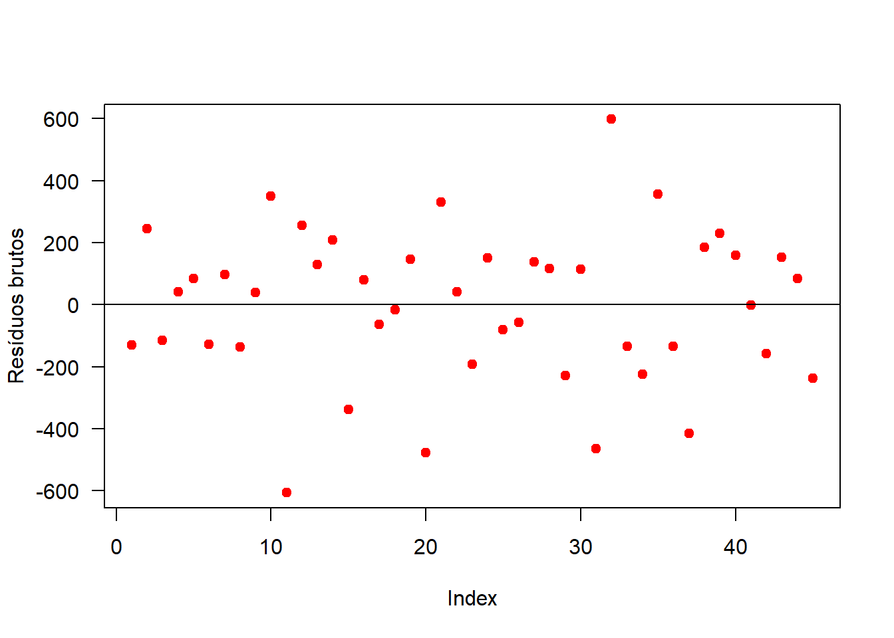

6 Delineamento em Quadrado Latino
- Na sessão de delineamento em blocos ao acaso, observamos que o mesmo é usado para reduzir o erro residual de um experimento utilizando o princípio do controle local;
- No Delineamento em Quadrado Latino, além dos princípios da repetição e da casualização, o princípio do controle local é utilizado duas vezes para controlar o efeito de dois fatores;
- Para controlar esta variabilidade, é necessário dividir as unidades experimentais em blocos homogêneos de unidades experimentais em relação a cada fator controlado.
- O número de blocos para cada fator controlado deve ser igual ao número de tratamentos. Uma vez formados os blocos, distribui-se os tratamentos ao acaso com a restrição que cada tratamento seja designado uma única vez em cada um dos blocos dos dois fatores controlados.
- Os níveis de um fator controlado são identificados por linhas em uma tabela de dupla entrada e os níveis do outro fator controlado são identificados por colunas na tabela.
- A grande restrição dos ensaios em quadrados latinos é que para 2, 3 ou 4 tratamentos teremos apenas 0, 2 ou 6 g.l., respectivamente,para o resíduo.
- Por outro lado, com 9 ou mais tratamentos, o quadrado latino fica muito grande, trazendo dificuldades na instalação, pois, para 9 tratamentos, teremos 81 parcelas.
- Por isso, os quadrados latinos mais usados são os de 5 x 5, 6 x 6, 7 x 7 e 8 x 8.
6.1 Modelo matemático
\[\begin{eqnarray} y_{ji}=\mu+\tau_i+\alpha_j+\beta_k+\varepsilon_{ij} \end{eqnarray}\]
\(y_{ji}\): é o valor observado na i-ésima linha e k-ésima coluna para o j-ésimo tratamento;
\(\mu\): é a média geral (ou constante comum a todas as observações);
\(\tau_i\): é o efeito de tratamento, com \(i = 1, 2, . . . , I\);
\(\beta_j\): é o efeito da k-ésima coluna;
\(\alpha_j\): é efeito da j-ésima linha
\(\varepsilon_{ij}\): é o erro experimental, tal que \(\varepsilon_{ij}\)~N(0; \(\sigma^2\)).
O modelo é completamente aditivo, ou seja, não há interação entre linhas, colunas e tratamentos.
6.2 Hipóteses e Modelo
\[\begin{eqnarray*} \left\{ \begin{array}{ll} H_0: & \mu_1 = \mu_2 =\mu_i\\[.2cm] H_1: & \mu_i \neq \mu_i' \qquad i \neq i'. \end{array} \right. \end{eqnarray*}\]
| CV | G.L. | S.Q. | Q.M. | Fcalc | Ftab |
|---|---|---|---|---|---|
| Tratamentos | \(p - 1\) | \(SQ_{Trat}\) | \(\frac{SQ_{Trat}}{p-1}\) | \(\frac{QMTrat}{QMRes}\) | \(F(\alpha;GL_{Trat} ;GL_{Res})\) |
| Linhas | \(p - 1\) | \(SQ_{L}\) | \(\frac{SQ_{L}}{p-1}\) | \(\frac{QM_{L}}{QM_{Res}}\) | \(F(\alpha;GL_{L} ;GL_{Res})\) |
| Colunas | \(p - 1\) | \(SQ_{C}\) | \(\frac{SQ_{C}}{p-1}\) | \(\frac{QM_{C}}{QM_{Res}}\) | \(F(\alpha;GL_{C} ;GL_{Res})\) |
| resíduo | \((p-2)(p-1)\) | \(SQ_{Res}\) | \(\frac{SQRes}{(p-2)(p-1)}\) | ||
| Total | \(p^2-1\) | \(SQ_{Total}\) |
6.2.1 Croqui de um experimento em DQL
Criando uma função para fazer um croqui
# Não alterar os comandos da função
library(agricolae)
library(gridExtra)
library(grid)
croqui=function(trat){
r=length(trat)
sort=design.lsd(trat,r,serie=0)
sort$book[,4]=as.factor(matrix(sort$book[,4],r,,T))
ncol=r
gs <- lapply(sort$book[,4], function(ii)
grobTree(rectGrob(gp=gpar(fill=ii, alpha=0.5)),textGrob(ii)))
grid.arrange(grobs=gs, ncol=ncol)}Vetor de tratamentos
Usando a função

6.3 Exemplo 1
Considere um experimento, cujo objetivo foi estudar o efeito da idade de castração no desenvolvimento e produção de suínos, avaliando-se o peso dos leitões. Quatro tratamentos foram estudados:
- A - castração aos 56 dias de idade;
- B - castração aos 7 dias de idade;
- C - castração aos 36 dias de idade;
- D - inteiros (não castrados);
- E - castração aos 21 dias de idade;
Foi utilizado o delineamento em quadrado latino buscando controlar a variação entre leitegadas (linhas) e a variação no peso inicial dos leitões (colunas), sendo a parcela experimental constituída de um leitão. Os ganhos de pesos, em kg, após o período experimental (28 semanas), estão apresentados no quadro abaixo:

| Linhas | Coluna 1 | Coluna 2 | Coluna 3 | Coluna 4 | Coluna 5 | Totais |
|---|---|---|---|---|---|---|
| Leitegada 1 | 93,0(A) | 115,4(C) | 116,9(E) | 110,2(D) | 110,4(B) | 545,9 |
| Leitegada 2 | 110,6(C) | 96,5(E) | 108,9(B) | 97,6 (A) | 112,0(D) | 525,6 |
| Leitegada 3 | 102,1(B) | 108,6(D) | 77,9(A) | 102,0(E) | 111,7(C) | 502,3 |
| Leitegada 4 | 115,4(D) | 94,9(A) | 114,0(C) | 100,2(B) | 118,5(E) | 543,0 |
| Leitegada 5 | 117,6(E) | 114,1(B) | 118,7(D) | 108,8(C) | 80,2(A) | 539,4 |
| Totais | 538,7 | 529,5 | 536,4 | 518,8 | 532,8 | 2656,2 |
6.3.1 Conjunto de dados
RESP=c(93.0, 115.4, 116.9, 110.2, 110.4,110.6, 96.5, 108.9, 97.6, 112.0,102.1, 108.6, 77.9, 102.0, 111.7,115.4, 94.9, 114.0, 100.2, 118.5,117.6, 114.1, 118.7, 108.8, 80.2)
(TRAT=c("A","C","E","D","B","C","E","B","A","D","B","D","A","E","C","D","A","C","B","E","E","B","D","C","A"))## [1] "A" "C" "E" "D" "B" "C" "E" "B" "A" "D" "B" "D" "A" "E" "C" "D" "A" "C" "B"
## [20] "E" "E" "B" "D" "C" "A"## [1] 1 1 1 1 1 2 2 2 2 2 3 3 3 3 3 4 4 4 4 4 5 5 5 5 5
## Levels: 1 2 3 4 5## [1] 1 2 3 4 5 1 2 3 4 5 1 2 3 4 5 1 2 3 4 5 1 2 3 4 5
## Levels: 1 2 3 4 56.4 Análise Descritiva
Media=mean(RESP)
Desvio=sd(RESP)
Variancia=var(RESP)
Maximo=max(RESP)
Minimo=min(RESP)
Mediana=median(RESP)
descritiva=cbind(Media,
Desvio,
Variancia,
Maximo,
Minimo,
Mediana)
kable(descritiva)| Media | Desvio | Variancia | Maximo | Minimo | Mediana |
|---|---|---|---|---|---|
| 106.248 | 11.17751 | 124.9368 | 118.7 | 77.9 | 110.2 |
6.4.1 Por Tratamento
Media=tapply(RESP,TRAT, mean)
Desvio=tapply(RESP,TRAT,sd)
Variancia=tapply(RESP,TRAT, var)
Maximo=tapply(RESP,TRAT,max)
Minimo=tapply(RESP,TRAT, min)
Mediana=tapply(RESP,TRAT,median)
descritiva=cbind(Media,
Desvio,
Variancia,
Maximo,
Minimo,
Mediana)
kable(descritiva)| Media | Desvio | Variancia | Maximo | Minimo | Mediana | |
|---|---|---|---|---|---|---|
| A | 88.72 | 9.014266 | 81.257 | 97.6 | 77.9 | 93.0 |
| B | 107.14 | 5.825204 | 33.933 | 114.1 | 100.2 | 108.9 |
| C | 112.10 | 2.636285 | 6.950 | 115.4 | 108.8 | 111.7 |
| D | 112.98 | 4.075782 | 16.612 | 118.7 | 108.6 | 112.0 |
| E | 110.30 | 10.288586 | 105.855 | 118.5 | 96.5 | 116.9 |
| Media | Desvio | Variancia | Maximo | Minimo | Mediana | |
|---|---|---|---|---|---|---|
| A | 88.72 | 9.01 | 81.26 | 97.6 | 77.9 | 93.0 |
| B | 107.14 | 5.83 | 33.93 | 114.1 | 100.2 | 108.9 |
| C | 112.10 | 2.64 | 6.95 | 115.4 | 108.8 | 111.7 |
| D | 112.98 | 4.08 | 16.61 | 118.7 | 108.6 | 112.0 |
| E | 110.30 | 10.29 | 105.86 | 118.5 | 96.5 | 116.9 |
6.5 Gráfico de Caixas (Boxplot)
car::Boxplot(RESP~TRAT,
las=1,
col="lightblue", xlab="",
ylab=expression("Resposta"))
points(Media,col="red", pch=8)
6.6 Análise de Variância
\[\begin{eqnarray*} \left\{ \begin{array}{ll} H_0: & \mu_1 = \mu_2 = \mu_3 = \cdots = \mu_{15} \\[.2cm] H_1: & \mu_i \neq \mu_i' \qquad i \neq i'. \end{array} \right. \end{eqnarray*}\]
mod=aov(RESP~ TRAT+linha+coluna)
av=anova(mod)
names(av)=c("GL","SQ","QM","Teste F", "p-valor")
kable(av, align = "l", format="pandoc")| GL | SQ | QM | Teste F | p-valor | |
|---|---|---|---|---|---|
| TRAT | 4 | 2020.0544 | 505.0136 | 9.0167153 | 0.0013321 |
| linha | 4 | 257.8264 | 64.4566 | 1.1508340 | 0.3796397 |
| coluna | 4 | 48.4984 | 12.1246 | 0.2164775 | 0.9241758 |
| Residuals | 12 | 672.1032 | 56.0086 |
Como p-valor calculado (p=\(0.0013321\)) é menor que o nível de significância adotado (\(p=0.05\)), rejeita-se \(H0\). Logo, ao menos dois tratamentos se diferem entre si
6.7 Pressuposições
6.7.1 Normalidade dos erros
\[\begin{eqnarray*} \left\{ \begin{array}{ll} H_0: & \mbox{Os erros seguem distribuição normal}\\[.2cm] H_1: & \mbox{Os erros não seguem distribuição normal}. \end{array} \right. \end{eqnarray*}\]
##
## Shapiro-Wilk normality test
##
## data: mod$res
## W = 0.96116, p-value = 0.438Como p-valor calculado (p=\(0.438\)) é maior que o nível de significância adotado (\(\alpha=0.05\)), não rejeita-se \(H_O\). Logo, os erros seguem distribuição normal.

6.7.2 Homogeneidade de variâncias
\[\begin{eqnarray*} \left\{ \begin{array}{ll} H_0: & \mbox{ As variâncias são homogêneas}\\[.2cm] H_1: & \mbox{ As variâncias não são homogêneas}. \end{array} \right. \end{eqnarray*}\]
##
## Bartlett test of homogeneity of variances
##
## data: mod$res by TRAT
## Bartlett's K-squared = 7.7901, df = 4, p-value = 0.09958Como p-valor calculado (\(p=0.0996\)) é maior que o nível de significância adotado (\(p=0.05\)), não rejeita-se \(H_0\). Logo, as variâncias são homogêneas.
6.7.3 Independência dos erros
\[\begin{eqnarray*} \left\{ \begin{array}{ll} H_0: \mbox{Os erros são independentes}\\[.2cm] H_1: \mbox{Os erros não são independentes}. \end{array} \right. \end{eqnarray*}\]
##
## Durbin-Watson test
##
## data: mod
## DW = 1.7241, p-value = 0.08134
## alternative hypothesis: true autocorrelation is greater than 0Como p-valor calculado (p=\(0.0813\)) é maior que o nível de significância adotado (\(p=0.05\)), não rejeita-se \(H_0\). Logo, os erros são independentes.

6.8 Teste de comparações
6.8.1 Usando o pacote easyanova
## $`Analysis of variance`
## df type III SS mean square F value p>F
## treatments 4 2020.0544 505.0136 9.0167 0.0013
## rows 4 257.8264 64.4566 1.1508 0.3796
## columns 4 48.4984 12.1246 0.2165 0.9242
## residuals 12 672.1032 56.0086 - -
##
## $`Adjusted means`
## treatment adjusted.mean standard.error tukey snk duncan t scott_knott
## 1 D 112.98 3.3469 a a a a a
## 2 C 112.10 3.3469 a a a a a
## 3 E 110.30 3.3469 a a a a a
## 4 B 107.14 3.3469 a a a a a
## 5 A 88.72 3.3469 b b b b b
##
## $`Multiple comparison test`
## pair contrast p(tukey) p(snk) p(duncan) p(t)
## 1 D - C 0.88 0.9997 0.8556 0.8556 0.8556
## 2 D - E 2.68 0.9776 0.8402 0.6003 0.5817
## 3 D - B 5.84 0.7332 0.6186 0.2748 0.2409
## 4 D - A 24.26 0.0019 0.0019 0.0005 0.0003
## 5 C - E 1.80 0.9949 0.7104 0.7104 0.7104
## 6 C - B 4.96 0.8286 0.5624 0.3385 0.3153
## 7 C - A 23.38 0.0026 0.0017 0.0006 0.0003
## 8 E - B 3.16 0.9598 0.5170 0.5170 0.5170
## 9 E - A 21.58 0.0048 0.0018 0.0009 0.0007
## 10 B - A 18.42 0.0150 0.0021 0.0021 0.0021
##
## $`Residual analysis`
## $`Residual analysis`$`residual analysis`
## values
## p.value Shapiro-Wilk test 0.4380
## p.value Bartlett test 0.1031
## coefficient of variation (%) 7.0400
## first value most discrepant 9.0000
## second value most discrepant 7.0000
## third value most discrepant 25.0000
##
## $`Residual analysis`$residuals
## 1 2 3 4 5 6 7 8 9 10
## -0.144 0.716 2.636 -3.224 0.016 -1.864 -12.324 1.856 12.496 -0.164
## 11 12 13 14 15 16 17 18 19 20
## -0.744 1.756 -6.064 -0.024 5.076 -1.424 4.176 -1.484 -6.804 5.536
## 21 22 23 24 25
## 4.176 5.676 3.056 -2.444 -10.464
##
## $`Residual analysis`$`standardized residuals`
## 1 2 3 4 5 6
## -0.027211353 0.135300893 0.498118928 -0.609231952 0.003023484 -0.352235843
## 7 8 9 10 11 12
## -2.328838268 0.350724101 2.361340717 -0.030990707 -0.140591989 0.331827329
## 13 14 15 16 17 18
## -1.145900297 -0.004535225 0.959200182 -0.269090043 0.789129228 -0.280428107
## 19 20 21 22 23 24
## -1.285736415 1.046125337 0.789129228 1.072580819 0.577485374 -0.461837125
## 25
## -1.9773582966.8.2 Usando o pacote laercio
##
## TUKEY TEST TO COMPARE MEANS
##
## Confidence level: 0.95
## Dependent variable: RESP
## Variation Coefficient: 7.043793 %
##
## Independent variable: TRAT
## Factors Means
## D 112.98 a
## C 112.1 a
## E 110.3 a
## B 107.14 a
## A 88.72 b
##
##
## Independent variable: linha
## Factors Means
## 1 109.18 a
## 4 108.6 a
## 5 107.88 a
## 2 105.12 a
## 3 100.46 a
##
##
## Independent variable: coluna
## Factors Means
## 1 107.74 a
## 3 107.28 a
## 5 106.56 a
## 2 105.9 a
## 4 103.76 a
##
## 6.8.3 Usando o pacote agricolae
## Tukey multiple comparisons of means
## 95% family-wise confidence level
## factor levels have been ordered
##
## Fit: aov(formula = RESP ~ TRAT + linha + coluna)
##
## $TRAT
## diff lwr upr p adj
## B-A 18.42 3.333159 33.50684 0.0149528
## E-A 21.58 6.493159 36.66684 0.0048180
## C-A 23.38 8.293159 38.46684 0.0025698
## D-A 24.26 9.173159 39.34684 0.0019006
## E-B 3.16 -11.926841 18.24684 0.9597645
## C-B 4.96 -10.126841 20.04684 0.8286018
## D-B 5.84 -9.246841 20.92684 0.7331622
## C-E 1.80 -13.286841 16.88684 0.9949414
## D-E 2.68 -12.406841 17.76684 0.9776166
## D-C 0.88 -14.206841 15.96684 0.9996909
6.8.4 Usando o pacote ExpDes.pt
## ------------------------------------------------------------------------
## Quadro da analise de variancia
## ------------------------------------------------------------------------
## GL SQ QM Fc Pr>Fc
## Tratamento 4 2020.05 505.01 9.0167 0.00133
## Linha 4 257.83 64.46 1.1508 0.37964
## Coluna 4 48.50 12.12 0.2165 0.92418
## Residuo 12 672.10 56.01
## Total 24 2998.48
## ------------------------------------------------------------------------
## CV = 7.04 %
##
## ------------------------------------------------------------------------
## Teste de normalidade dos residuos (Shapiro-Wilk)
## valor-p: 0.4380496
## De acordo com o teste de Shapiro-Wilk a 5% de significancia, os residuos podem ser considerados normais.
## ------------------------------------------------------------------------
##
## Teste de Tukey
## ------------------------------------------------------------------------
## Grupos Tratamentos Medias
## a D 112.98
## a C 112.1
## a E 110.3
## a B 107.14
## b A 88.72
## ------------------------------------------------------------------------